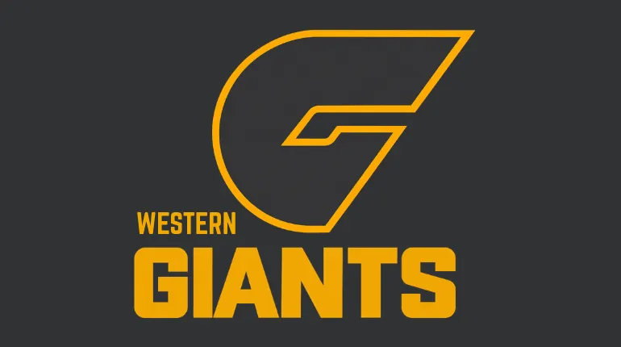

East Coast Eagles become Western GIANTS ahead of inaugural SFL season
The East Coast Eagles will enter the inaugural Sydney Football League (SFL) season in 2027 as the Western GIANTS, marking a bold evolution for the foundation club
Read more →